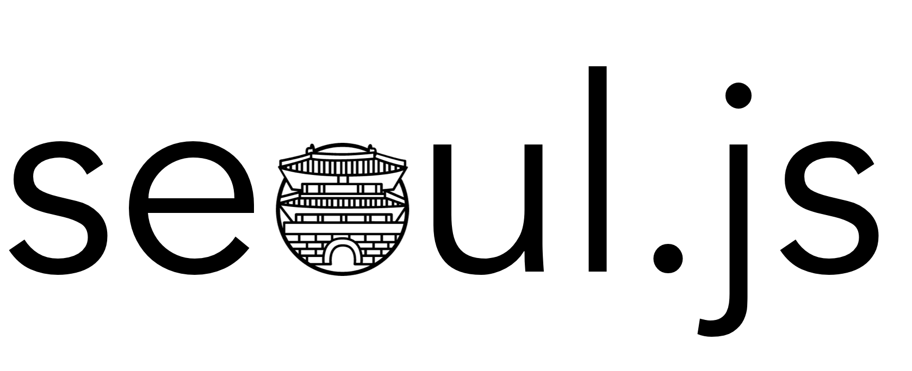

자바스크립트에 대화를 위해서 넓고 얕은 지식을 (자대넓얕) 위한 메시브 오픈 온라인 커뮤니티 (MOOC)
What for? Yet Another JS Community? (무엇을 위해서? 왜 또 .js?)
특정 기술에 집중하기 보다는 넓은 지식 고류에 중심을 둔 커뮤니티입니다. 슬랙 그리고 다양한 온라인 컨퍼런스 툴을 중심으로 활동하는 온라인 센츄릭/오리엔티드 커뮤니티입니다.
Topics? (무엇을 다루나요?)
Javscript 가 연관 되어 있으면 모두 다룹니다. Vanilla.js 에서 ES.next, Babel.js, Flow 그리고 Typescript 까지, Polymer 에서 Angular, Vue.js, Ember.js, ... React.js 까지, Node.js 에서 Jellyscript, Electron 그리고 NW.js 까지, Chromium 에서 Firefox, MS Edge 그리고 Samsung Browser 까지, Desktop, Mobile Web 그리고 Arduino 까지, WASM 와 Service Worker, PWA 까지. MongoDB 부터 IndexedDB, 그리고 Firebase 까지. 이제 Javascript 는 소프트웨어로 개발이 가능한 여러 플랫폼을 아우르는 거대한 담론의 대상입니다. 여러가지 기술을 복합적이고 입체적인 시각으로 봐야하고 서로 이질적인 기술도 같이 다루어야 합니다
Schedules (스케쥴)
- Kick off meetup on cloudcast.io: TBD
Organizers (운영자들)

Jimmy Moon |

Rhio Kim |
|---|
License
- MIT @ seoul.js.org
- CC Icon @ https://thenounproject.com/term/seoul/403791/